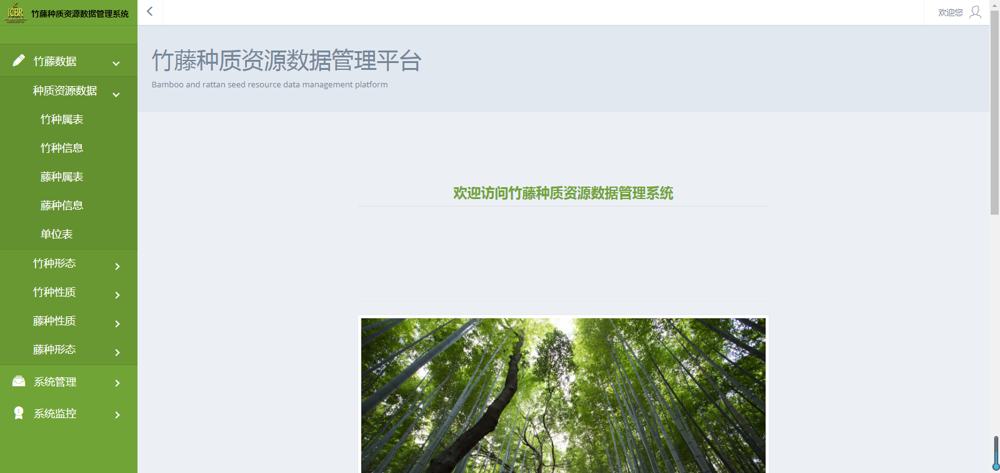
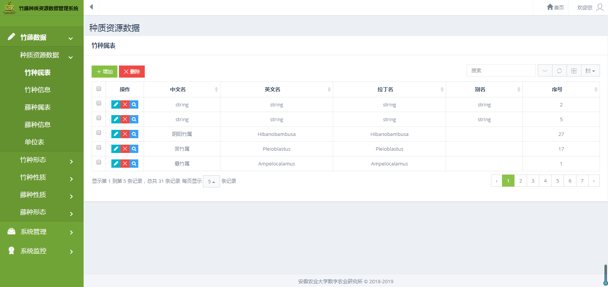

opt:{title:'',overlay:.5,callback:null,drag:true,size:undefind,content:'',buttons:{'保存': ["btn-primary btnSave"],'取消': ["btn-default btnCancel", function (pop) { pop.close(); }]}}参数说明：
必填
title:''显示的标题
overlay:0.5弹窗透明度，默认为0.5
drag:true是否允许拖动，默认为true
size:undefind弹窗的尺寸，demo:{width:600,height:400} 表示弹窗设置为高400px，宽600px
content:''字符串、html、objectobject配置如下
{type:'view',url:'',method:'POST',data:undefind}- 必填
url:''请求的urlmethod:'POST'请求的方式，默认为Postdata:undefind发送的数据{type:'datagrid',search:true,pagination:'',columns:'',outOperator:[],table:{}}- 必填
type:'datagrid'表示使用datagrid作为弹窗内容search:true是否显示搜索按钮- pagination、columns、outOperator、table等配置请参照 分页插件 的配置
global.Fn.Bambootattan-home({ title: '弹窗示例', //size: { width: 1000 }, content: { type: 'datagrid', table: { keyName: 'coupon_id' }, columns: [ { title: '利益代码', column: 'benefit_code' }, { title: '利益名称', column: 'title',width:100 }, { title: '前端名称', column: 'frontname' }, { title: '利益类别', column: 'coupon_type' }, { title: '使用平台', column: 'platform' }, { title: '有效期类型', column: 'coupon_value' }, { title: '数量限制', column: 'coupon_value' }, { title: '剩余数量', column: 'coupon_value' }, { title: '审核状态', column: 'coupon_value' } ], pagination: { url: '@Url.Content("~/DataServer/GetCoupone")', method: 'post', singleSelect: true } }, buttons: { '保存': ["btn-primary btnSave", function ($pop) { console.log($pop.GetChecked()); $pop.close(true); }] } });
opt:{type:'show:success',title:'',msg:'',timeout:1000,callback:null,afterClose:null}参数说明
必填type:'show:success' 值:值==> [alert:show:confirm:prompt]:[success|error|warning] 第一个参数表示显示方式：alert、show、confirm、prompt，第二个参数表示消息的展示形式：success、error、warning
- 参数一
- alert:对应表示带一个确定按钮的弹窗，需要用户点击确定才会关闭(用于显示错误消息等)
- show:对应不带按钮的弹窗，而且1s后会自动关闭
- confirm:对应两个按钮(确定、取消)提供用户选择操作，该方法对应一个回调函数callback 可以在改回调函数中获取用户点击的是确定按钮(true)还是取消按钮(false)
- prompt:对应两个按钮和一个文本输入框，同样对应一个回调函数callback，该回调函数带2个参数，第一个表示是否点击确定按钮，第二个表示用户输入的值
- 参数二
- success:对应绿色，一般用于成功
- warning:对应黄色，一般用于警告
- error:对应红色，一般用于错误消息
必填
msg:提示的消息
title:弹窗的标题
callback:回调函数，仅在alert、prompt、confirm时有效
global.Fn.Bambootattan-data({ type:'confirm:warning', msg:'你确定要删除吗？', title:'删除提示', callback:function(result){ alert("你点击的结果是："+result); } });
图3.2 功能研究室
点击““功能研究室”菜单项，如图3.2所示。
●因为权限的不同，所显示的功能研究室的情况也不同，用户的功能权限也不同。
●首席专家只能修改本体系功能研究室；
●研究室主任能够修改本研究室的基本信息。
图3.2 功能研究室
点击““功能研究室”菜单项，如图3.2所示。
●因为权限的不同，所显示的功能研究室的情况也不同，用户的功能权限也不同。
●首席专家只能修改本体系功能研究室；
●研究室主任能够修改本研究室的基本信息。
图3.2 功能研究室
点击““功能研究室”菜单项，如图3.2所示。
●因为权限的不同，所显示的功能研究室的情况也不同，用户的功能权限也不同。
●首席专家只能修改本体系功能研究室；
●研究室主任能够修改本研究室的基本信息。
图3.2 功能研究室
点击““功能研究室”菜单项，如图3.2所示。
●因为权限的不同，所显示的功能研究室的情况也不同，用户的功能权限也不同。
●首席专家只能修改本体系功能研究室；
●研究室主任能够修改本研究室的基本信息。
图3.2 功能研究室
点击““功能研究室”菜单项，如图3.2所示。
●因为权限的不同，所显示的功能研究室的情况也不同，用户的功能权限也不同。
●首席专家只能修改本体系功能研究室；
●研究室主任能够修改本研究室的基本信息。
必填 plugins:[]要初始化的插件名称，有:file、img、datetime、ckeditor,你可以这样写['img','datetime']也可以任性一点这样写'img,datetime' 建议需要几个写几个(比如当前页仅需要日期插件，就只写一个datetime就行)
container表单id，可以为空(主要用途，缩小查找范围,提高性能)Demo
global.Fn.Bammboo-Form('datetime、img')
元素为：<input type="text" class="date-picker" data-minviewmodel="1" data-format="yyyy-MM" / >
当调用global.Fn.Bammboo-Form('datetime')生成插件的时候，上面这个日期插件只允许选择到月份 而且选择的值是 年-月
必填 plugins:[]要初始化的插件名称，有:file、img、datetime、ckeditor,你可以这样写['img','datetime']也可以任性一点这样写'img,datetime' 建议需要几个写几个(比如当前页仅需要日期插件，就只写一个datetime就行)
container表单id，可以为空(主要用途，缩小查找范围,提高性能)Demo
global.Fn.Bamboo-Nature('datetime、img')日期控件还支持年月日的限制选择，比如：改日期控件只允许选择到月份 没有日期，您需要在对应的控件上加一个data-minviewmodel=1
data-minviewmodel,值为1，表示显示月份 2：表示到年 0：表示可以选择到日必须为数字不能是字符串
data-startview默认会取data-minviewmodel的值，与data-minviewmodel用途一样，用于设置起始打开的界面日期控件更多api请查看 datetimepicker插件
元素为：<input type="text" class="date-picker" data-minviewmodel="1" data-format="yyyy-MM" / >
当调用global.Fn.Bamboo-Nature('datetime')生成插件的时候，上面这个日期插件只允许选择到月份 而且选择的值是 年-月
formId表单的id为表单添加验证的时候需要调用此方法来增加验证相关的默认样式，验证失败时的红色警告、验证成功时候的绿色显示等。(在form表单生成后，在表单规则配置之前 否则可能无效)
utc是否utc时间,true or false 也可以省略此参数 默认省略此参数必填
str要格式化的字符串值
format格式,如:yyyy/MM/dd hh:mm:ss 默认为yyyy-MM-dd
global.Fn.System-management(new Date(),"yyyy-MM-dd hh:mm:ss");
global.Fn.System-management(new Date(),"yyyy-MM-dd");
global.Fn.System-management(new Date(),"yyyy-MM-dd");
global.Fn.System-management("\/Date(1439568000000)\/","yyyy-MM-dd hh:mm:ss");
global.Fn.System-management("2015/07/20","yyyy-MM-dd hh:mm:ss");
...
必填
obj字符串|dom对象|jquery对象
container查找范围显示，可空该方法返回一个jquery对象,主要用途：当不确定当前传递过来的参数是jquery对象还是id或者dom对象时使用
global.Fn.$($("#btnSubmit")).bind('click',function(){//......})很少使用
global.Fn.$('btnSubmit')获取指定id的jquery对象
global.Fn.$('#btnSubmit')获取指定id的jquery对象
global.Fn.$('.btnSubmit')获取指定样式的对象
global.Fn.$(document.getElementById('btnSubmit'))将dom对象转换为jquery对象